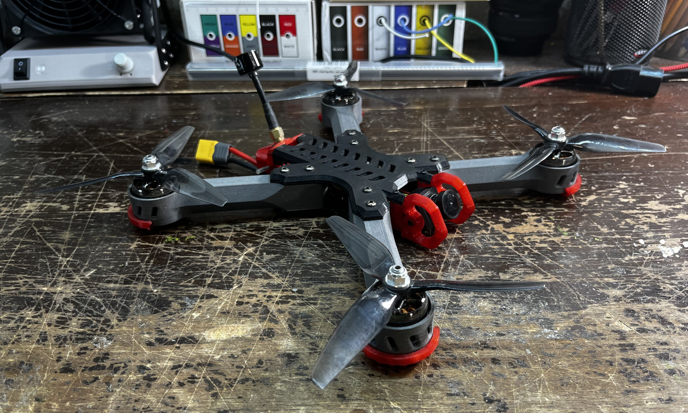
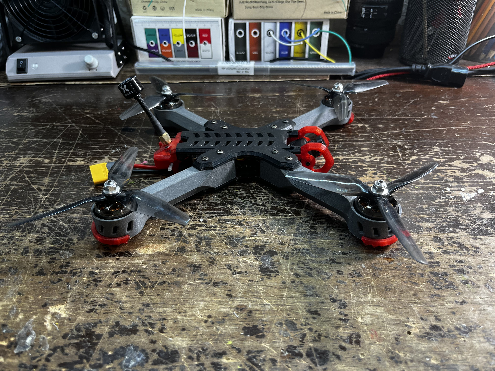
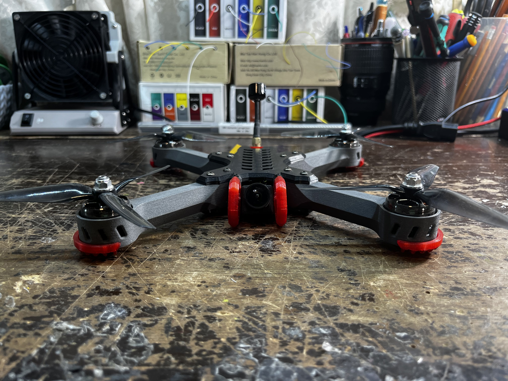
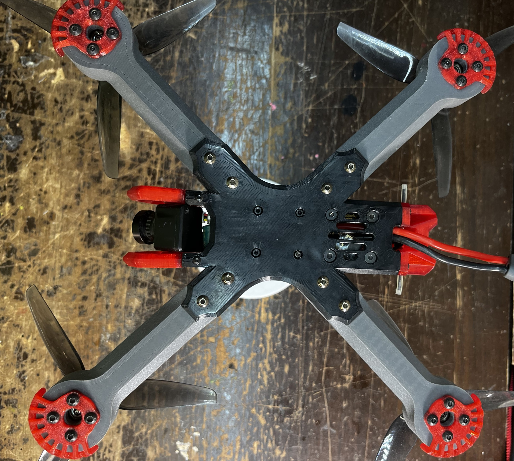
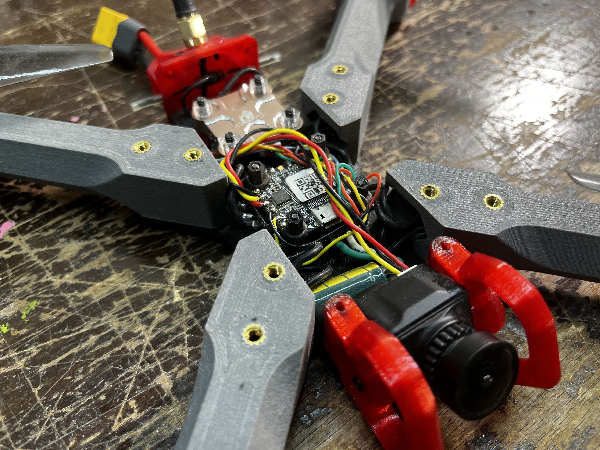
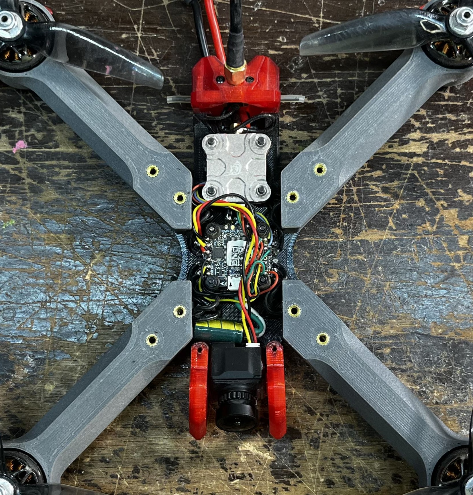
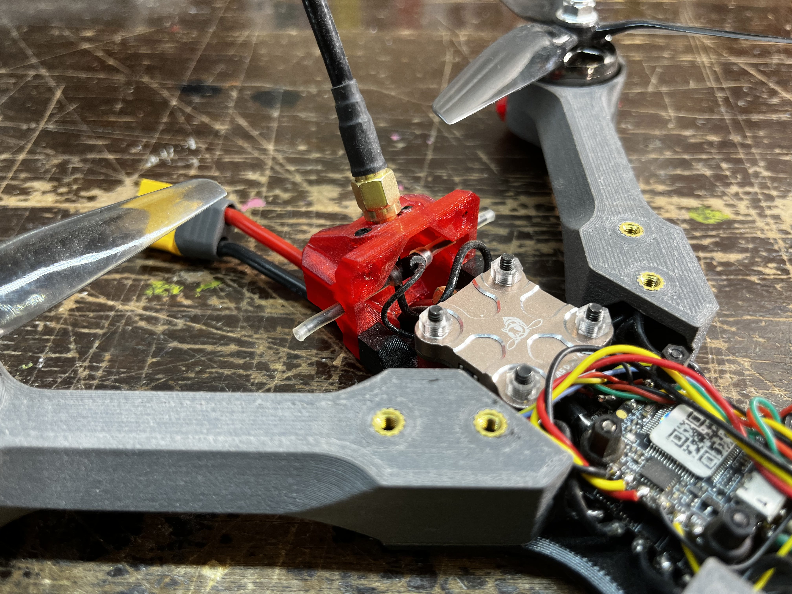
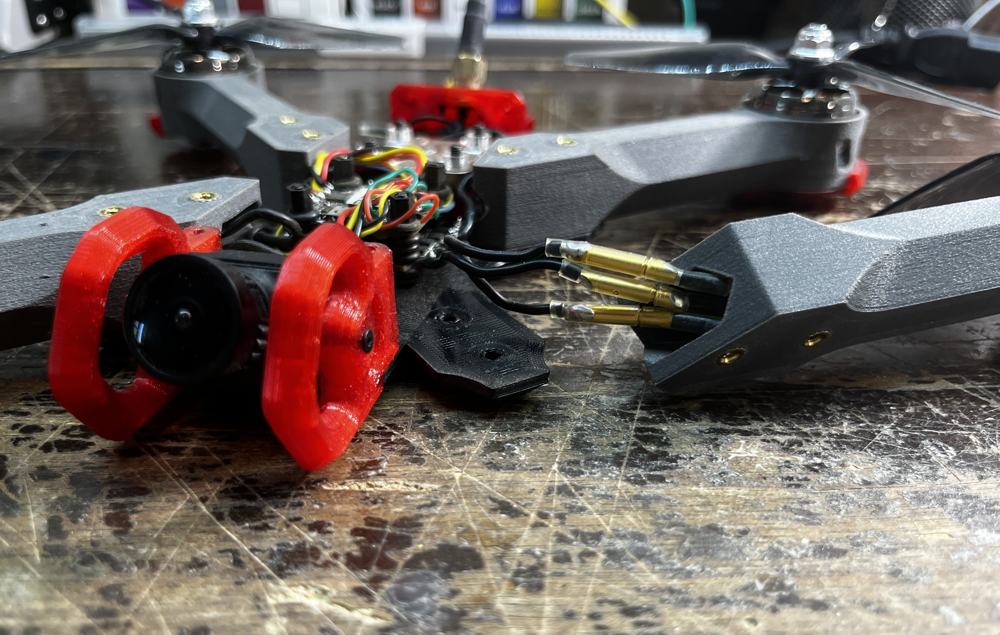
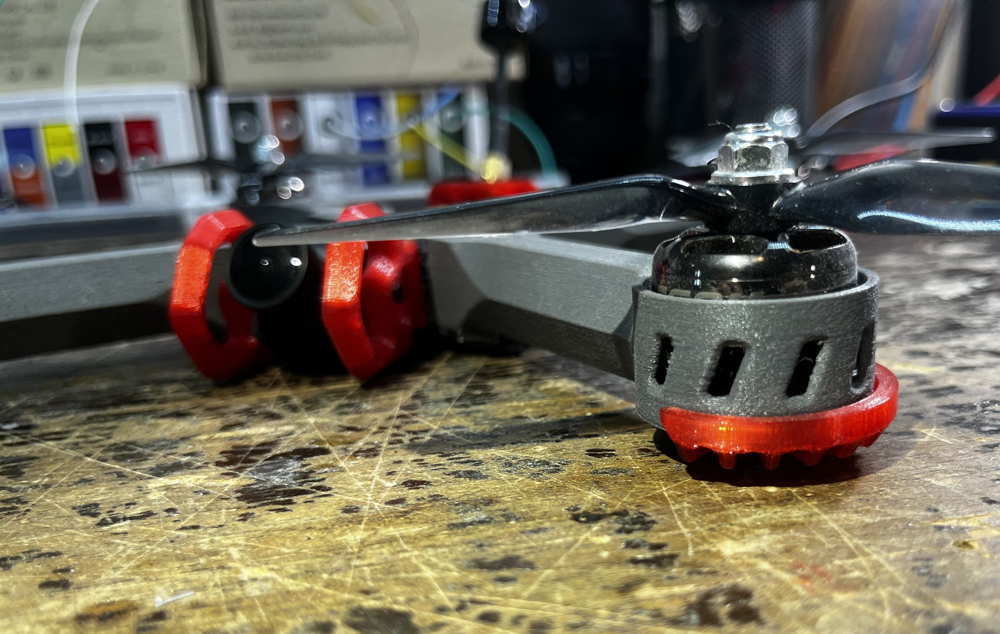
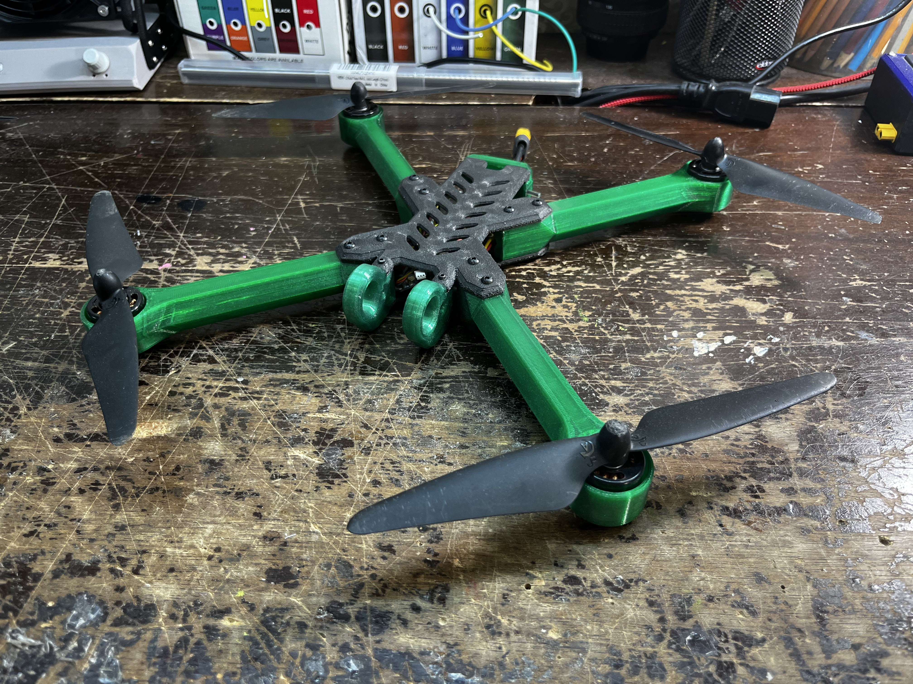

For their power, maneuverability, and mechanical simplicity, drones have earned a special place in my interests. However, the consumer drone market is largely dominated by either fragile, technology-laden plastic enclosures that are difficult to replace, or rugged CNC-machined carbon fiber frames. In designing my own drone, I aimed to integrate the advantages of both approaches: the mechanical simplicity and ease of assembly associated with carbon fiber structures, alongside the versatility of 3D-printed components. The core principle of the design is sandwiching four tubular arms between two plates, granting a multitude of benefits. Not only does the tubular arm profile allow the motor cables to run safely down the arms, it results in a significantly more rigid arm than a flat bar of the same weight. Further, since each arm is attached with four screws, replacing a broken one takes a few minutes, and the four arms together behave as standoffs to which the plates are clamped, resulting in a drone body that is much more rigid than one single plate. Higher rigidity means lower susceptibility to vibrations, which means cleaner flight characteristics.
Demonstrating a few basic maneuvers.
Cruising speed flyby.
High throttle punch test.

Drone design in CAD.

The black plate is printed in Polycarbonate, while the arms are made of glass fiber-reinforced nylon. These material choices leverage polycarbonate's impact resistance and rigidity for the central structure, while the glass fiber-reinforced nylon arms provide a high strength-to-weight ratio and improved stiffness, improving durability and flight stability under load.

Impact prone parts of the drone (front camera, rear antenna block, ends of the arms) are protected by soft red TPU.

Front view

The bottom plate profile mirrors the top plate, with the exception of a dedicated ventilation opening located beneath the video transmitter module, which is known to generate significant heat during operation.

Internal components of the drone: camera, voltage spike-filtering capacitor, flight computer & motor controller (stacked together), video transmitter, and finally the video transmission as well as radio control receiving antennas.

Internals overhead view

The TPU end block simultaneously holds the video antenna, the receiver antenna and allows power wires to pass through.

A crucial step in the assembly is to equip the motors and motor driver board with bullet connectors. This way, if an arm must be replaced, no extra soldering is required. In the case of a violent impact where the arm is not just fractured, but flung away from the drone, the connectors will disconnect before the solder pads on the driver board break, preventing permanent damage to the expensive part.

At the outer ends of the arms, the motors are housed within vented enclosures. This enclosed design mitigates potential damage to the motors in the event of a crash, while also reducing the ingress of dust and debris. Simultaneously, the vents provide the necessary cooling for the motors, which can dissipate tens of watts of heat at full throttle operation.

As an afterthought, a long-armed prototype was developed featuring significantly smaller, lower-RPM motors driving larger, low-pitch two-blade propellers, with the objective of improving flight time and range by increasing overall aerodynamic efficiency. Despite its increased wingspan, the configuration is less powerful and more sluggish than the original build, but nonetheless achieves its intended purpose.